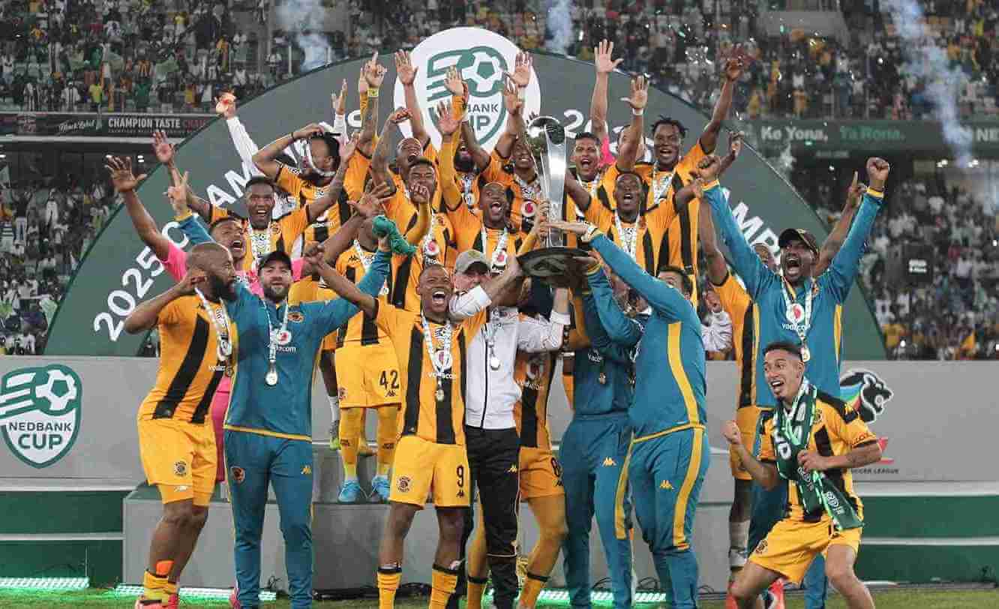

I love football because it brings people together and creates a powerful sense of unity and excitement. Whether I'm watching a match or playing on the field, there's an unmatched thrill in the energy, teamwork, and strategy involved. The passion of the game, the roar of the crowd, and the unpredictability of each moment make football more than just a sport, it’s a way to express myself, relieve stress, and connect with others who share the same love. It teaches discipline, resilience, and the joy of chasing a goal—both on and off the pitch.
I love Kaizer Chiefs because the team holds a special place in my heart, tied deeply to memories of growing up with my mother. She was a passionate supporter, and watching games together became a cherished part of our bond. Her love for the team was infectious, and over time, it became mine too. Supporting Kaizer Chiefs reminds me of those moments—of joy, excitement, and togetherness. The club represents more than just football to me; it’s a connection to my childhood, my roots, and the love my mother and I shared for the beautiful game.
This year was incredibly special for us as Kaizer Chiefs fans because we finally lifted a cup after a long 10-year wait—and what made it even sweeter was that we did it against our fierce rivals. The victory wasn't just about the trophy; it was a moment of pride, relief, and pure joy for every supporter who has stood by the team through the highs and lows. Beating our biggest rivals in the final made the win unforgettable, proving that our loyalty and patience were worth it. It felt like a turning point, a reminder of the glory days, and a new beginning for the club and its supporters.
Picture of Kaizer Chiefs celebrating their lates cup
